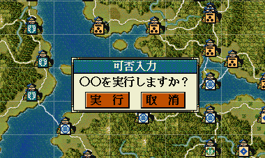

実行・取消型のダイアログを表示するAPIです。
大小関わらず、自作の独自イベントなどで利用することになるでしょう。

int 実行／取消ダイアログ表示(string ダイアログ文字列)
void カスタム::On_相場変更直前() {
int ret = 実行／取消ダイアログ表示("○○を実行しますか？");
if (ret == TRUE) {
デバッグ出力 << "実行します" << endl;
}
else {
デバッグ出力 << "実行しません" << endl;
}
}
「実行・取消ダイアログ」に関する主な所は以上となります。 詳しくは「ダイアログ情報型.h」を参照してください。